1. Windows VM and Lab Environment
Getting the monitored host ready for Sysmon and log analysis
This first phase prepares a clean Windows 10 virtual machine that will act as the monitored endpoint.
I wanted the machine to feel like a realistic corporate workstation, but stripped down so that security
artifacts are easy to understand. The next screenshots walk through how I hardened privacy, tuned the
hardware profile, and opened an initial PowerShell session that I will later use as a baseline.
The first screenshot focuses on privacy options. Here I deliberately reduced data sharing settings so the
machine behaves more like a locked down workstation. Getting this step right is important because it limits
unnecessary background network noise, which makes real attacker traffic easier to pick out later.
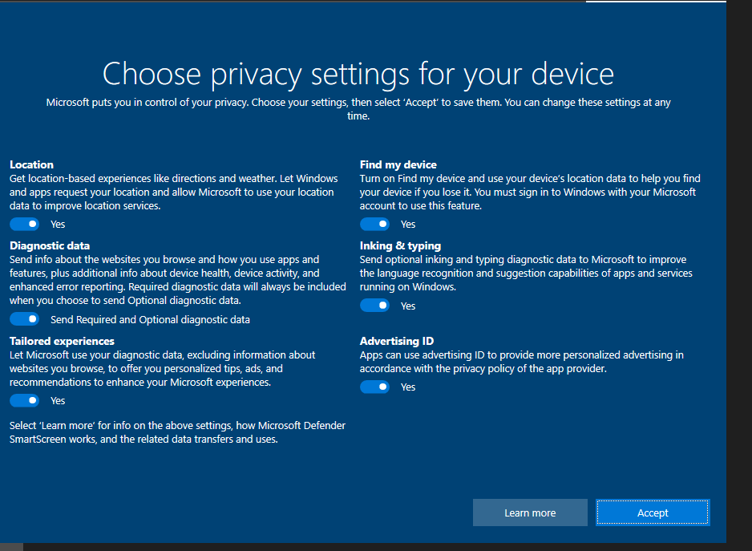
Windows 10 privacy settings during setup, keeping data sharing limited before security tools are added.
Next I adjusted the VM hardware and display configuration. This screenshot shows how I balanced memory and
CPU for the lab while also choosing a resolution that keeps Event Viewer and PowerShell readable in a single
view. For real investigations, comfort matters. If the console is hard to read, analysts are less likely to
dig into details and follow events to completion.
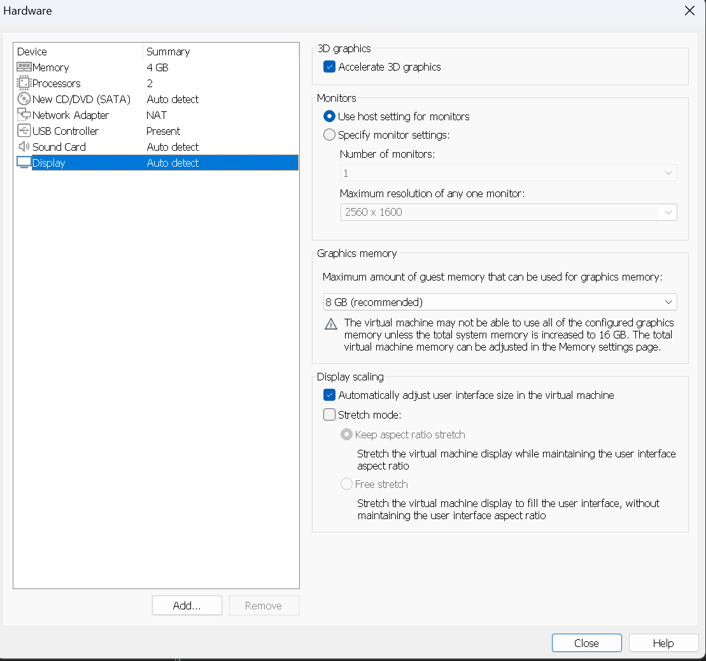
Hardware and display configuration tuned for a clear view of consoles and event logs during analysis.
With the VM tuned, I logged in and opened a PowerShell window pinned to the taskbar. This forms my primary
working surface for the rest of the lab. The screenshot below captures that initial desktop state before any
Sysmon configuration or attack activity, giving me a visual baseline to compare against later.
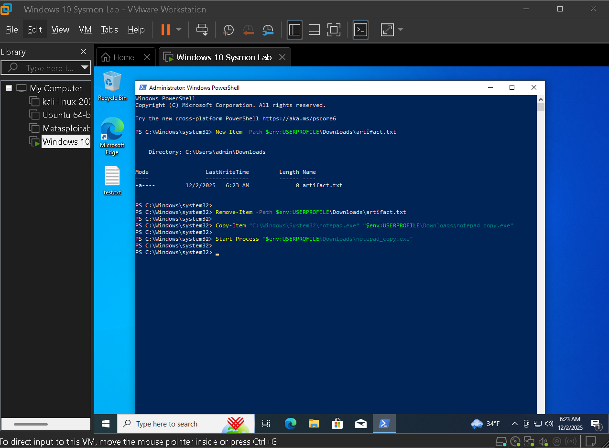
Final Windows host desktop used in the lab, with core tools pinned and ready for Sysmon work.
To close out environment setup, I ran a small set of harmless PowerShell commands and captured the running
process list. This establishes which shells and supporting processes are normal on the machine. Later, when
suspicious commands and encoded payloads appear, I can compare them directly against this baseline.
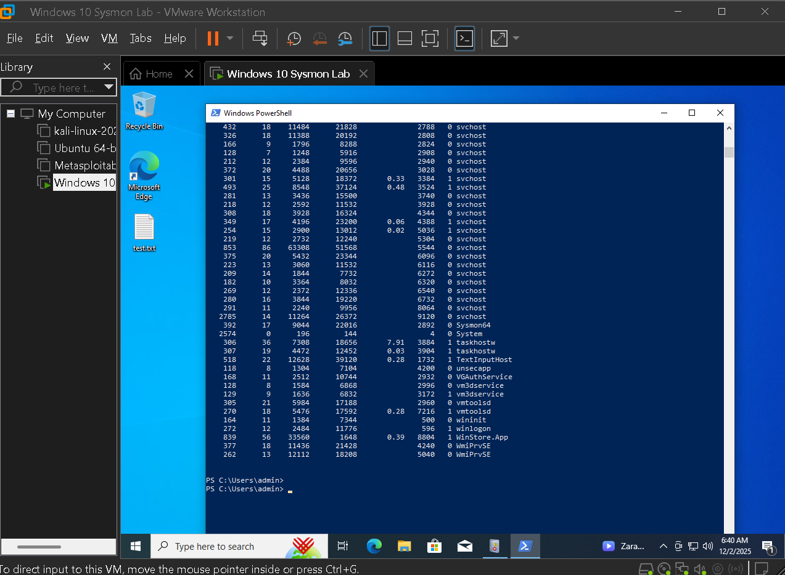
Baseline PowerShell process list, used later to spot unusual shells spawned during simulated attacks.
I also used simple commands like whoami to confirm the logged in identity and verify that
Sysmon will later record even basic discovery behavior. This screenshot is intentionally mundane. When the
same command appears again inside a more complex script, the contrast helps highlight how attacker tooling
chains normal actions together to reach their goal.
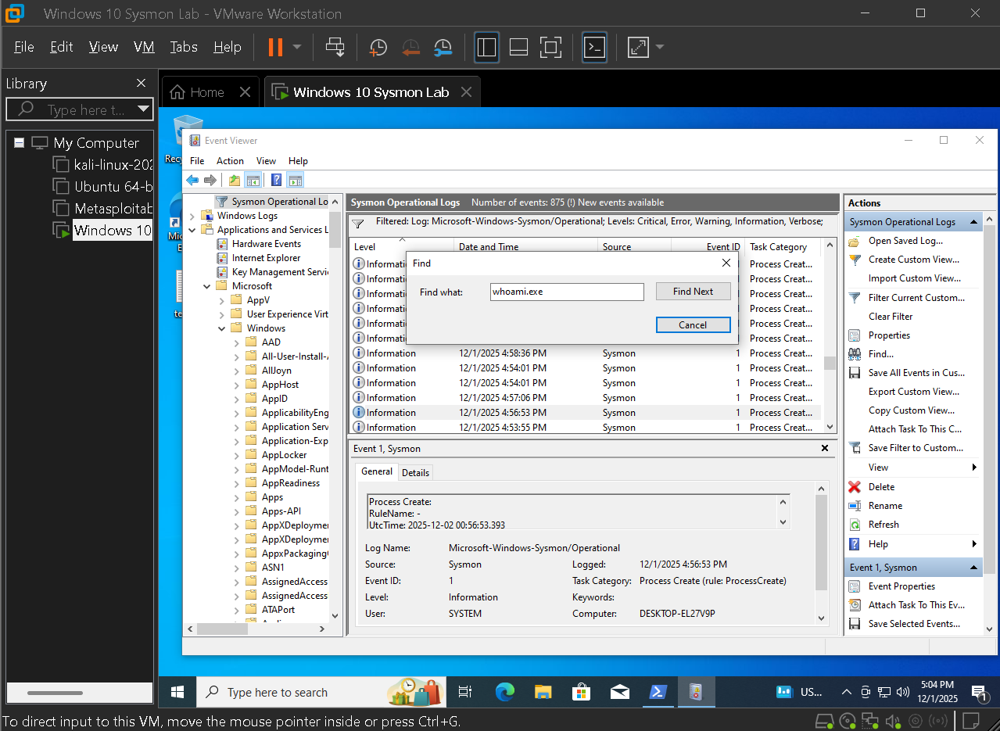
Running whoami as a simple discovery command that will later be used as a reference in Sysmon logs.
Finally, I searched for PowerShell processes from within the shell itself. This reinforces how analysts can
pivot between the host and logs to build the full picture. It also confirms that PowerShell is running with
the expected parameters before any encoded commands or advanced payloads are introduced.
PowerShell based process search, confirming which shells are active on the host before the lab simulations.
Key actions in this step
- Prepared a dedicated Windows monitoring VM with tuned privacy and hardware settings.
- Established a baseline desktop layout and PowerShell workflow for later comparison.
- Captured simple discovery commands and process lists to anchor future investigations.
2. Sysmon Installation and Configuration
Installing Sysmon with a tuned configuration and validating the Operational log
With the host ready, I shifted focus to installing Sysmon and understanding the configuration that controls
what it logs. The goal here is not only to get events flowing, but to prove that I can read and reason about
the configuration file that drives those events.
I started by reviewing a popular community configuration on GitHub. The screenshot below shows that context.
Comments in the file explain which event IDs are enabled and how noisy scenarios are filtered out. Reading
the configuration up front helps me later explain why a given attack does or does not generate logs.
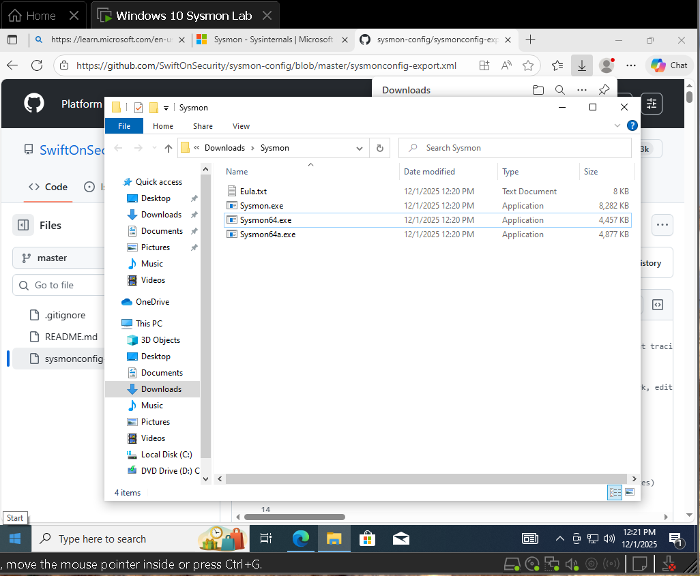
Reviewing a community Sysmon configuration from GitHub to see which events are enabled and how noise is filtered.
After confirming the configuration, I installed Sysmon from an elevated prompt. This screenshot captures the
successful install message. It is important to show that the service and driver registered correctly, since
misconfiguration at this step would silently prevent the rest of the lab from generating useful telemetry.
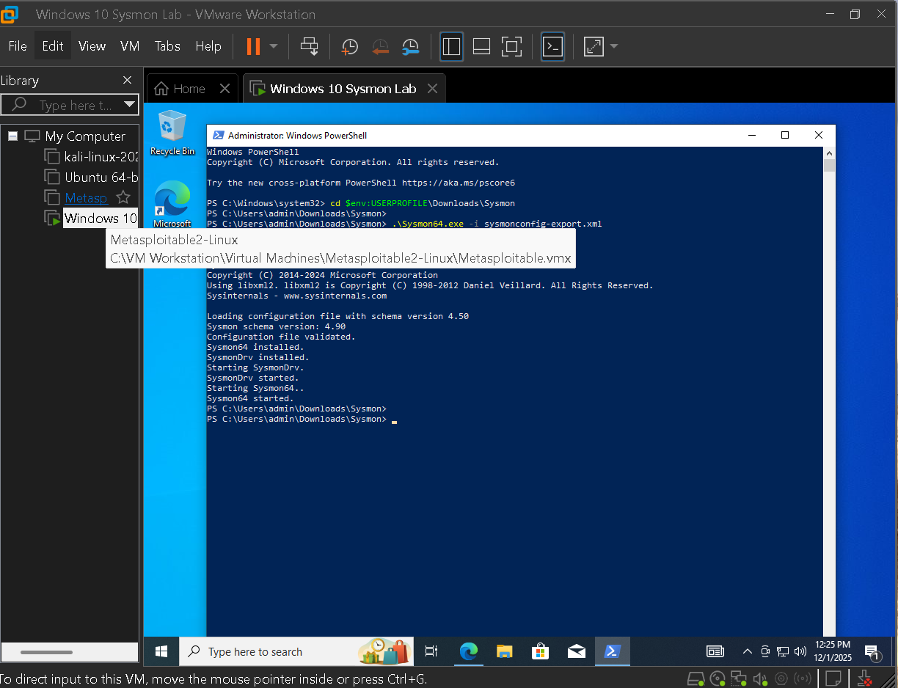
Sysmon installed from an elevated console, confirming the driver and service have been registered on the host.
Before customizing any views, I opened Event Viewer to see the default state. The next screenshot shows the
generic Windows logs that ship with the operating system. Capturing this view creates a clear contrast once
the Sysmon Operational log is enabled and starts filling with higher fidelity events.
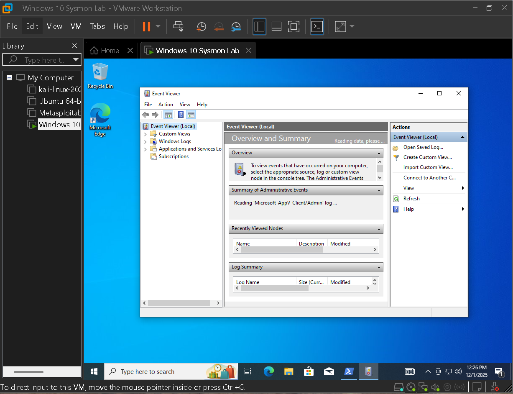
Initial Event Viewer layout before tuning, used as a reference to show how much data Sysmon adds.
I then navigated to the Sysmon Operational channel under Applications and Services Logs. The screenshot below
confirms that the channel exists and that events are streaming in. This is the main source I use for process,
network, file, registry, and DNS telemetry throughout the rest of the project.
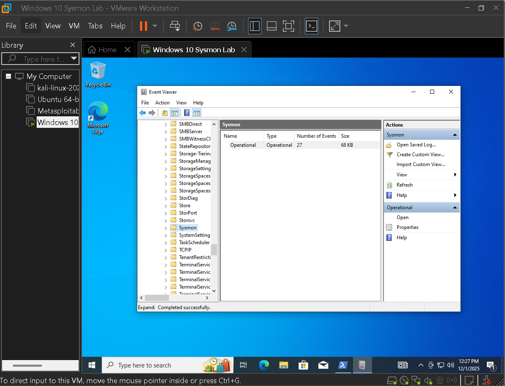
Sysmon Operational channel selected and streaming events in real time, confirming that logging is active.
Finally, I filtered the view down to the Sysmon provider. This step makes sure that the console shows only
Sysmon events rather than a mix of different sources. It sounds small, but it prevents confusion once I start
hunting on specific IDs and need to know exactly which component produced each record.
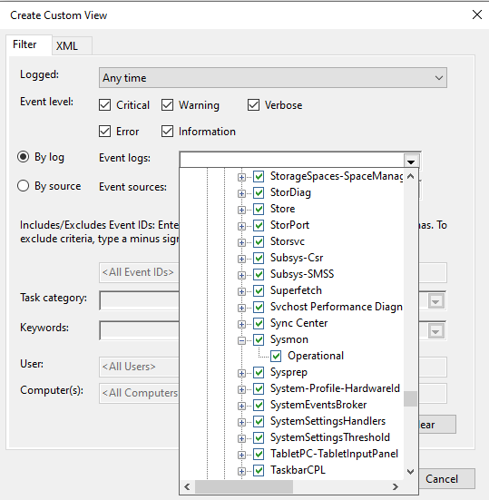
Filtering Event Viewer by event sources so the view stays focused on Sysmon rather than every Windows provider.
Key actions in this step
- Selected and reviewed a community Sysmon configuration before deployment.
- Installed Sysmon as a persistent service and confirmed it successfully registered.
- Verified that the Sysmon Operational channel is present, active, and filtered correctly.
3. High Value Event IDs and Log Filtering
Focusing on process, network, file, registry, and DNS events that matter most
Once Sysmon was generating data, I tuned my views so that hunting sessions stayed focused on high value
telemetry. Rather than scrolling through every event, I built a custom view anchored around a small set of
event IDs that align with common attack techniques.
The first screenshot here shows the creation of a custom view in Event Viewer. I selected Sysmon as the source
and then specified only the event IDs that I planned to use throughout the lab. This turns Event Viewer into a
security focused dashboard instead of a general purpose log browser.
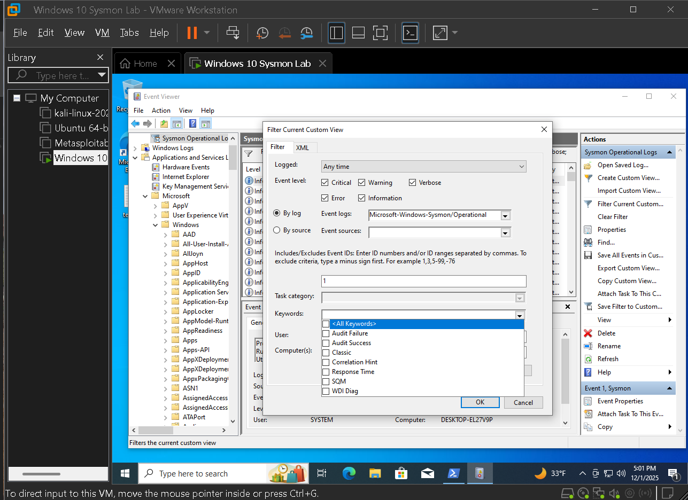
Building a custom view that tracks a small set of high value Sysmon event IDs used throughout the lab.
Next, I built a filter specifically for network events. The screenshot below shows a view restricted to
Event ID 3, which logs outbound and inbound connections. Focusing on this ID makes it easier to spot beacon
patterns, unusual ports, or connections tied to persistence mechanisms later on.
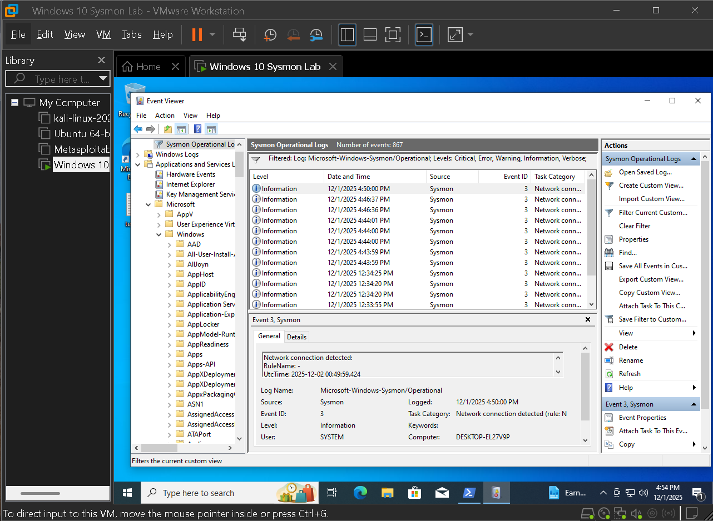
Example filter that isolates Event ID 3 network connection events, ready for hunting on specific ports or IPs.
To understand why filtering is necessary, I also captured a view that shows how noisy some IDs can be. The
screenshot below highlights a high volume of Event ID 13 entries, which record registry value changes.
Without filtering and context, this amount of data would quickly overwhelm an analyst.
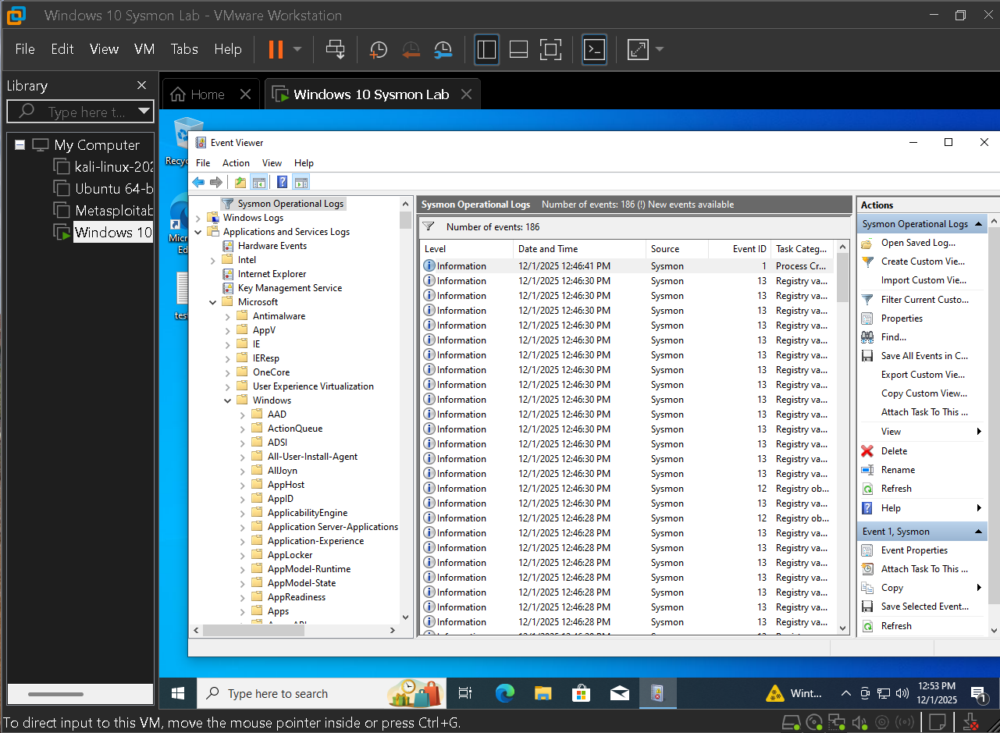
High volume of Event ID 13 registry value set events, showing why tuned filtering is important for investigations.
I then walked through examples of each core event type. The process creation screenshot shows how Sysmon
records not only the new process, but also the parent, full image path, and command line. These fields are
critical for reconstructing the story behind an attack chain.
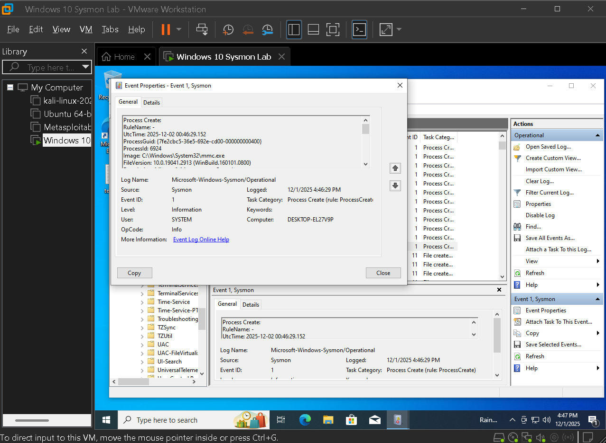
Sysmon Event ID 1 process creation, including parent process, image path, and full command line for context.
The next example focuses on Event ID 11, which tracks file creations. Here, I highlighted a DLL being written
to disk. In a real case, changes like this could indicate a dropper, side loaded component, or payload for
later execution.
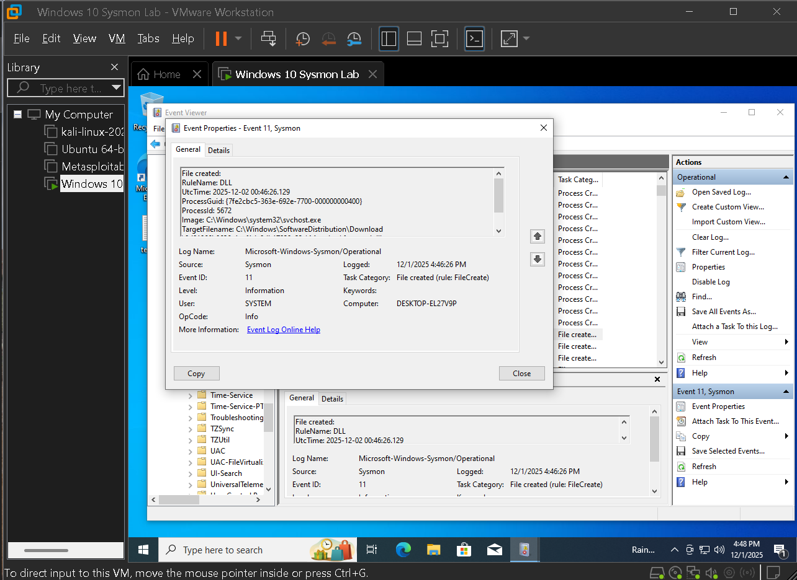
Sysmon Event ID 11 file create event that records a suspicious DLL being written to disk as part of a test.
I then returned to Event ID 13, but this time zoomed in on a single registry value set that is directly related
to persistence. This screenshot is used later in the lab when I build out a full Run key case from the logs.
Sysmon Event ID 13 registry value set, later used to track Run key persistence attempts in investigations.
Finally, I examined Event ID 22, which logs DNS queries. The screenshot below shows the properties for a
single lookup. Combined with Event ID 3, these entries help link host processes to the remote infrastructure
they contact, which is essential for identifying command and control.
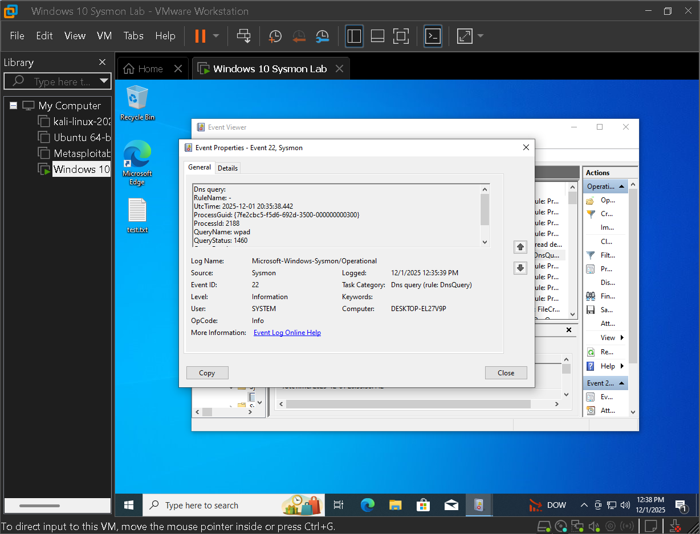
Sysmon Event ID 22 DNS query properties, showing the domains contacted by processes during simulated beacons.
Key actions in this step
- Built a custom Event Viewer view centered on a small set of high value Sysmon event IDs.
- Demonstrated why raw registry and network logs need filtering before analysis.
- Captured detailed examples of process, file, registry, and DNS events for later case work.
4. Threat Hunting and Attack Simulation
Following the trail from normal activity to suspicious behavior
With telemetry tuned, I moved into active hunting. This part of the lab introduces realistic behavior in
phases, starting with harmless actions, then escalating to LOLBin based downloads, registry persistence,
and command and control style traffic. Each screenshot represents a moment in the story that I later
convert into a SOC case.
To establish a baseline, I began with a simple web browsing session. The screenshot below shows a normal
browser launch. The point here is not the website itself, but rather how standard user activity appears in
Sysmon so that abnormal network patterns will stand out later.
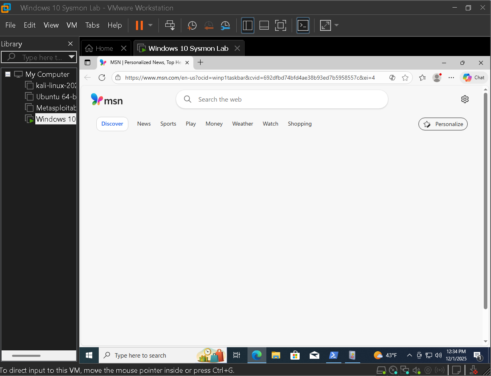
Baseline investigation of a normal browser launch to see what clean, non malicious web usage looks like in Sysmon.
I then created a simple test file and watched Sysmon record the file creation event. By starting with a
harmless file, I can later compare how malicious payload drops or DLL downloads differ in path, naming, and
parent process relationships.
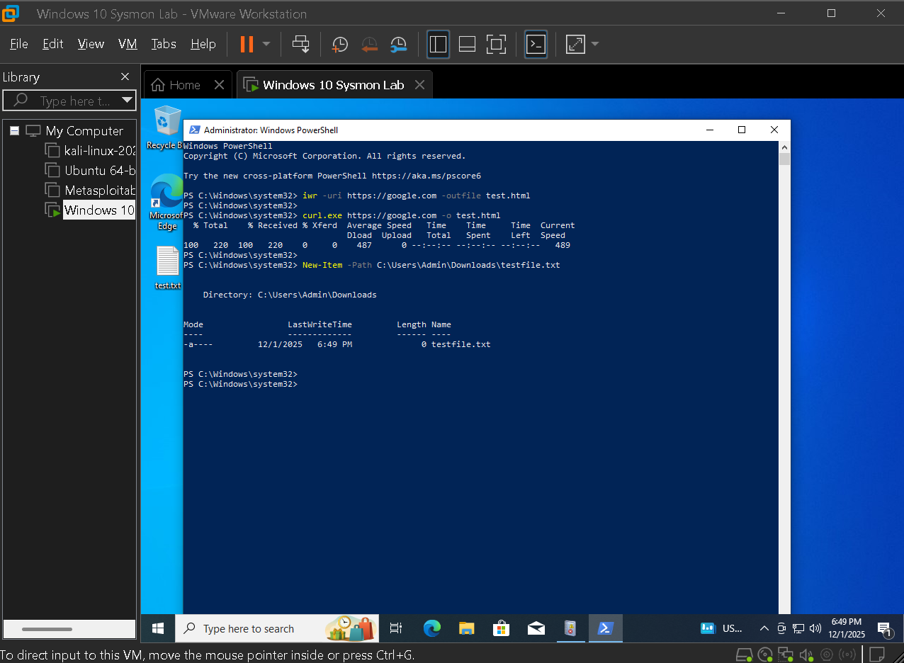
Simple test file creation that produces a Sysmon file create event, used as a reference before any malware style activity.
After baselining, I moved into LOLBin based downloads. The next screenshot shows the use of a curl style
command from PowerShell to pull a file from a remote server. This is a common attacker pattern because it
blends into administrative behavior while still retrieving an external payload.
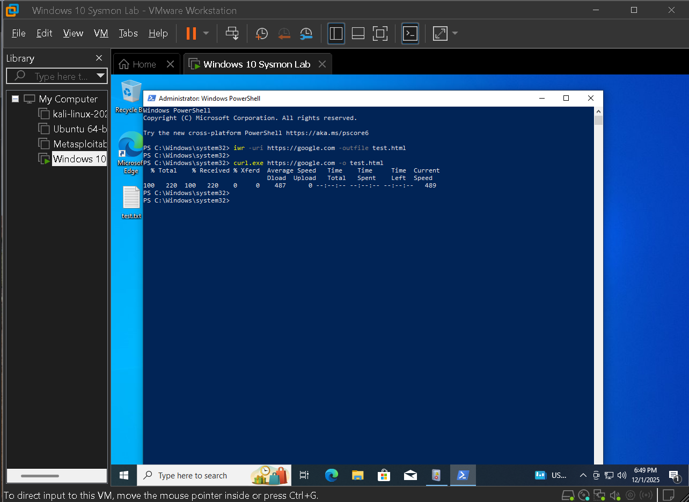
Using a trusted tool with a curl style command to download a file, then validating that Sysmon captures the process and network details.
I repeated the download using Invoke-WebRequest to show how a similar technique can appear with
different command lines. Comparing these two screenshots side by side with the logs teaches how a defender
can build signatures that focus on behavior rather than a single exact string.
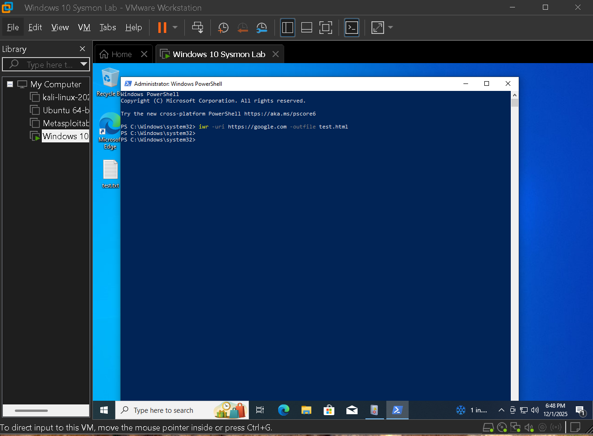
Alternate download test using Invoke WebRequest so I can compare how different commands appear in Sysmon logs.
Next, I focused on persistence through the registry. The first screenshot in this mini sequence shows a
PowerShell command that sets a Run key value by modifying the registry with Set-ItemProperty.
This operation is later recorded in Sysmon as Event ID 13 and becomes one of the key indicators in the
persistence case.
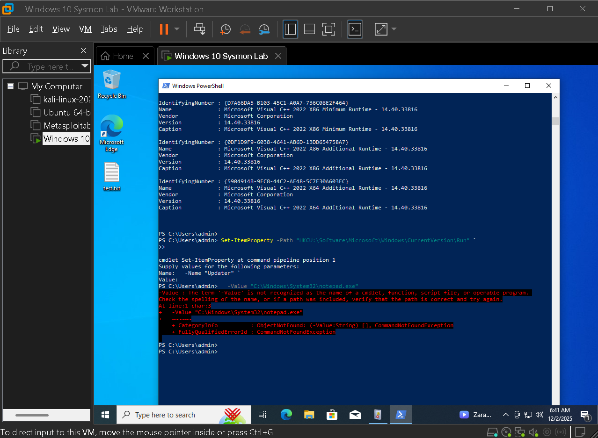
PowerShell command used to create or update the Run key value, later captured in Event ID 13 registry events.
The second screenshot shows the registry based Run key entry as seen from a defender perspective. Here the
value points to the payload that will execute at logon. This view is much closer to what an analyst would
see during a real response effort.
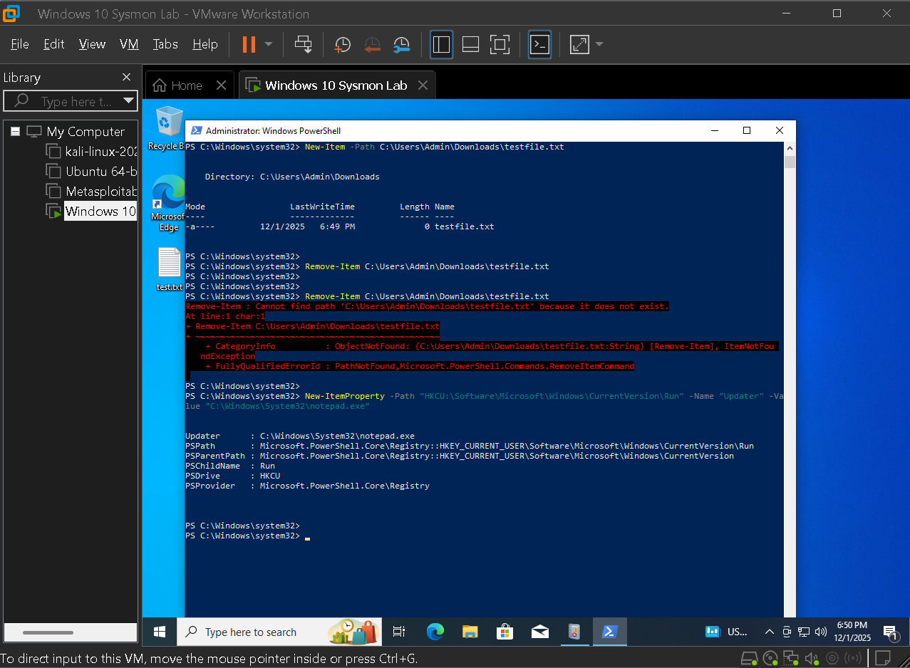
View inside Event Viewer showing how the new Run key entry appears from a defender perspective.
To test detection of cleanup attempts, I tried removing the persistence key and watched how Sysmon recorded
the change. The screenshot below captures that removal attempt. In a real case, this type of log can reveal
where an attacker tried to cover their tracks but left partial artifacts behind.
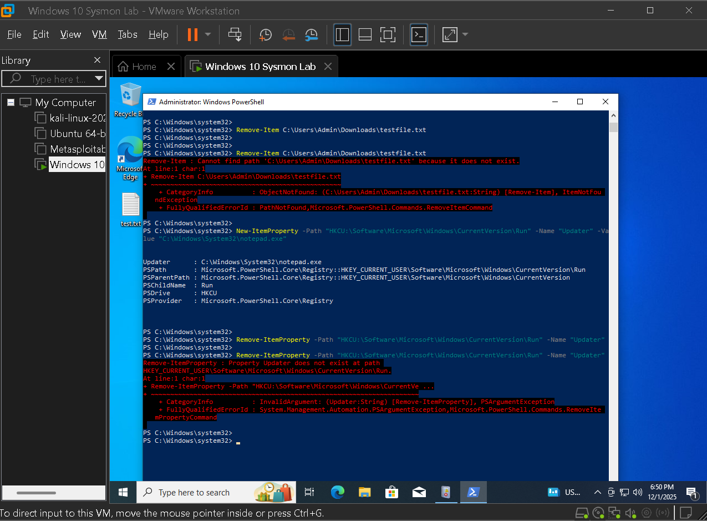
Attempted removal of the persistence key and the matching registry events that show the change being recorded.
I then pivoted back into Sysmon to view the registry value set that represents this persistence in more
detail. The next screenshot highlights the exact Event ID 13 record that ties the Run key path to the
payload. This is the log entry I reference later in my written case summary.
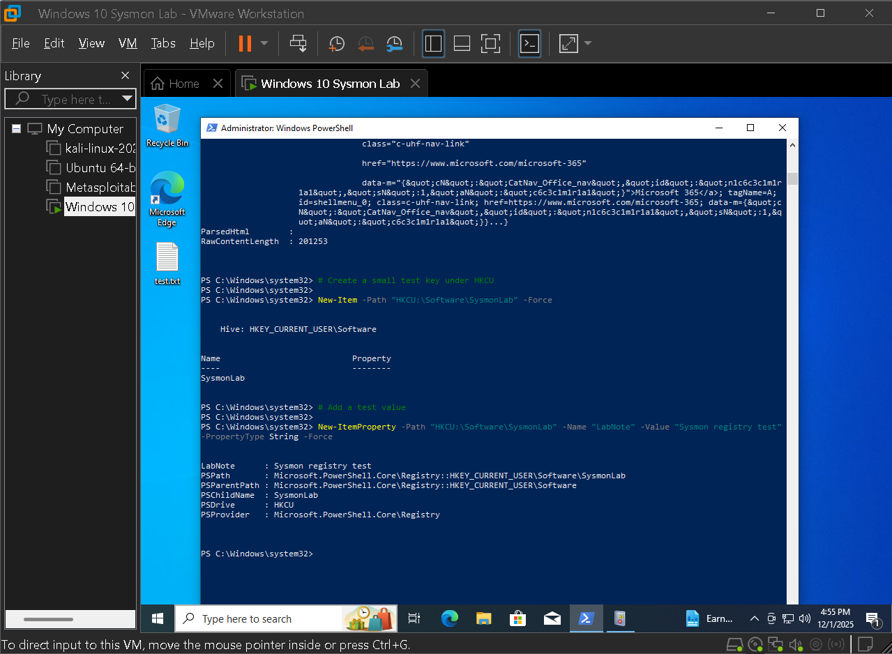
Registry value set observed in Sysmon that stores a payload path, forming the basis of a Run key persistence case.
After persistence, I moved into simulated command and control traffic. The next screenshot shows a Sysmon
Event ID 3 entry that records a network connection to a remote host. This becomes the network pivot point
that links registry changes and encoded commands to external infrastructure.
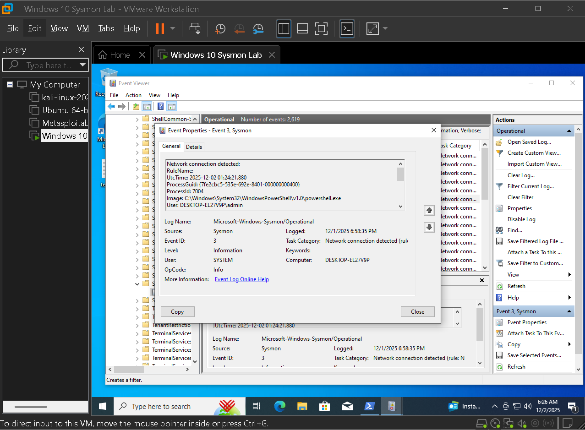
Sysmon Event ID 3 network connection that links PowerShell activity to an external command and control server.
I then zoomed in on a separate network event representing a beacon style connection. Here the focus is on the
repeated communication to the same host and port, which is characteristic of many C2 frameworks and botnets.
Investigation of Sysmon Event ID 3 entries that show a beacon style network connection to a command and control server.
To tie everything together, I executed an encoded PowerShell command. The next screenshot shows the script
block view of that payload. From here I can decode the command, identify the intent, and match it to the
registry changes and network traffic captured earlier in the lab.
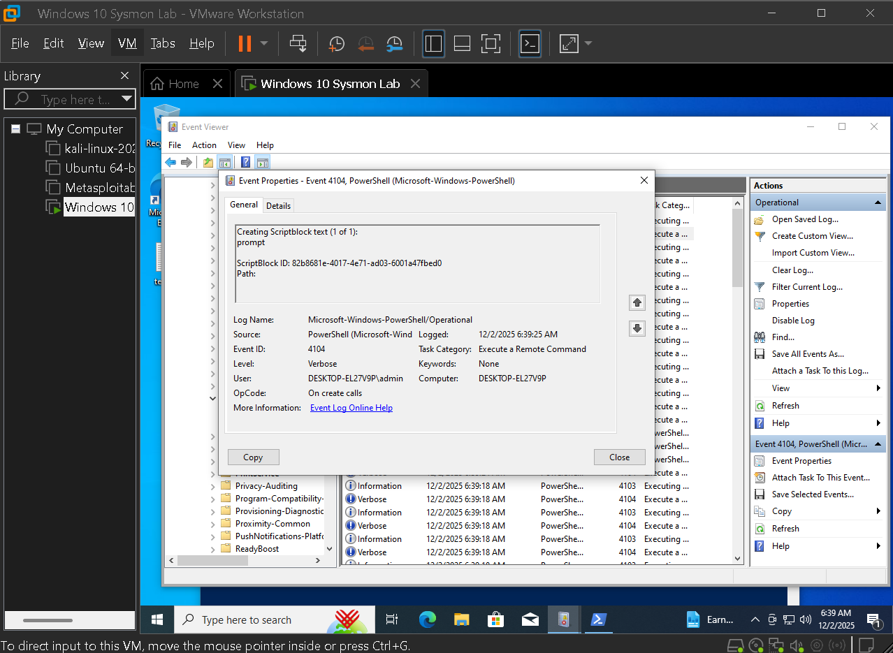
Script block view of an encoded PowerShell command that is later tied to persistence and network activity.
The final screenshot in this section captures the moment that encoded command executes. This gives me the
exact process details and timing needed to correlate the event with registry writes and network connections,
forming a complete attack storyline from a single host.
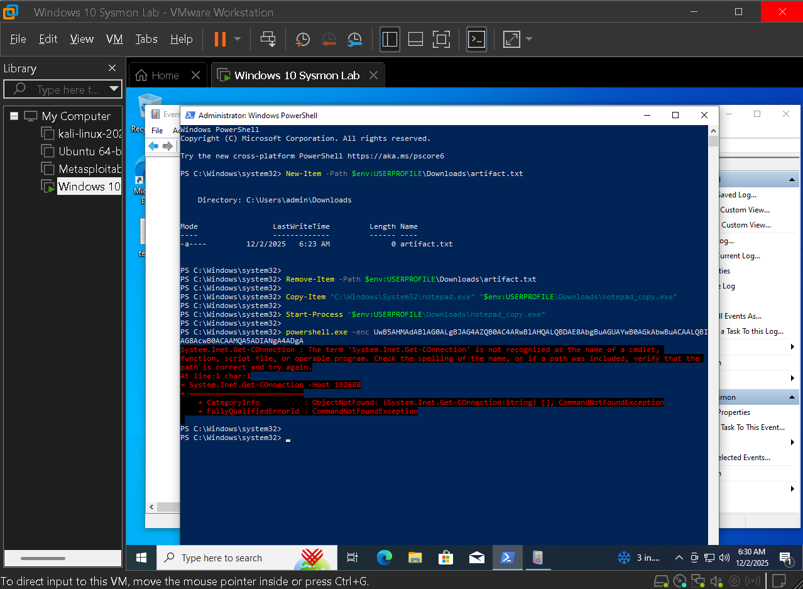
Execution attempt for the encoded command, including process context that will be referenced in the SOC report.
Key actions in this step
- Established normal browsing and file activity as a baseline for comparison.
- Simulated attacker behavior with LOLBins, registry persistence, and beacon style network traffic.
- Captured encoded PowerShell usage that ties process, registry, and network events into a single narrative.
5. SOC Reporting and MITRE ATT&CK Mapping
Turning Sysmon telemetry into a structured incident report
The last stage of the lab is reporting. Here I treat each simulation as if it were a real ticket and
document the key findings for a senior analyst. That includes the commands used, the Sysmon event IDs that
revealed the activity, and a short explanation of why the behavior is suspicious. I then tie these findings
back to MITRE ATT&CK techniques.
The first screenshot in this section shows a post exploitation view of whoami usage. Seeing the
same command appear again at this phase helps emphasize how attackers chain simple discovery with more
advanced techniques, and why even basic events can matter when placed in context.
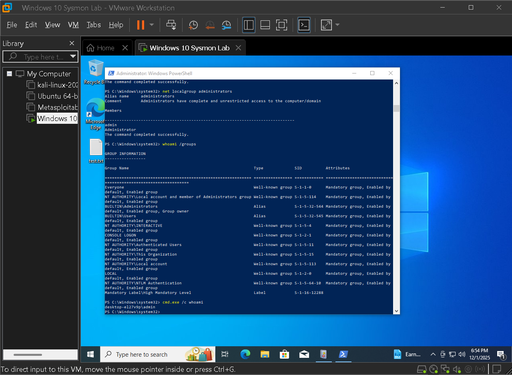
Post exploitation use of whoami, revisited as part of a larger sequence of discovery and persistence steps.
The next screenshot captures systeminfo being run after the host is already under attacker
control. Together with the process creation logs from earlier, this reinforces how Sysmon can reconstruct
the full discovery phase even when the attacker uses native tools.

Post exploitation use of systeminfo to pull host details, recorded as additional process creation events.
Finally, I pulled everything into a SOC style reporting template. The screenshot below shows one of the
cases built around persistence. It documents the registry path, payload, supporting Sysmon event IDs, and
mapped MITRE techniques. This is the type of artifact that can be attached directly to a ticket or used as a
training example for other analysts.
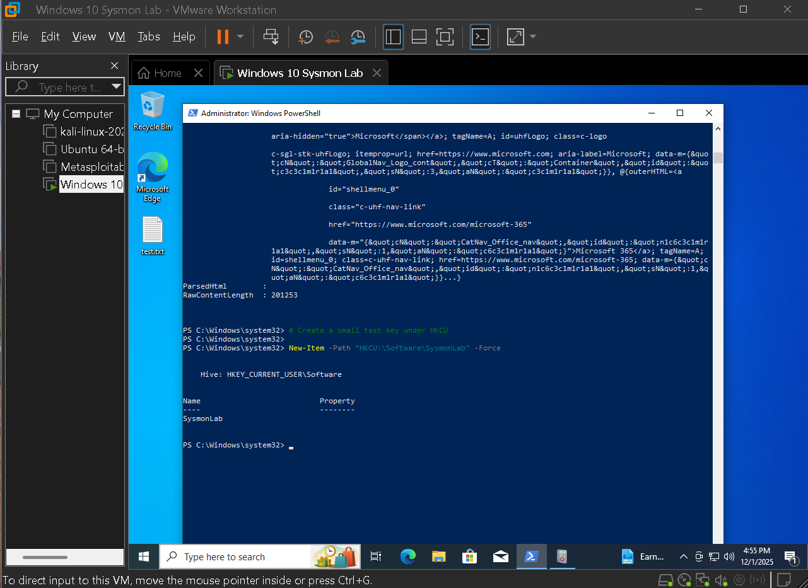
SOC style report template capturing the persistence payload, key events, indicators, and mapped MITRE techniques.
From here it is straightforward to extend the report with more simulations or to adapt the template to other
hosts. The combination of structured narrative, screenshots, and event references makes it easy for someone
who did not run the lab to still understand what happened and why it matters.
Example MITRE ATT&CK mapping used in this lab
| Case |
Technique |
Sysmon / Log Source |
Detection notes |
| Encoded PowerShell persistence |
T1059.001 · PowerShell |
Sysmon Event ID 1 + script block log (4104) |
Full command line and decoded script reveal suspicious payload execution.
|
| Run key payload in registry |
T1547.001 · Run keys |
Sysmon Event ID 13 |
Registry value set events show where the payload is stored and which key launches it.
|
| Command and control beacon |
T1071 · Application layer protocol |
Sysmon Event ID 3 and 22 |
Outbound network connections and DNS queries tie the beacon to its remote infrastructure.
|
| Post exploitation host discovery |
T1082 · System information |
Sysmon Event ID 1 |
Commands like systeminfo and whoami generate process events that reveal discovery steps.
|
This mapping framework can be extended with additional techniques as more simulations are added, while still
staying grounded in the same Sysmon telemetry that powers the rest of the lab.
Summary
This Sysmon project shows how I move from a clean Windows host to a complete threat detection story. I prepared
the environment, installed and verified Sysmon, tuned the views around high value event IDs, and then simulated
behavior that ranges from normal browsing to persistence and command and control activity. By reading only the
logs, I rebuilt what happened and documented each investigation in a SOC friendly format with clear MITRE
mappings. This lab demonstrates practical experience with Windows telemetry, threat hunting, and written
communication of findings, which together are core skills for an entry level security analyst.